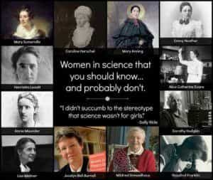
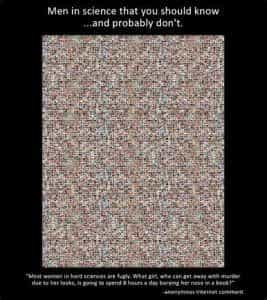

A simple apostate from modernity who takes pleasure in pointing out blatant leftist hypocrisy, mocking SJW nonsense and a little thought-criminality from time to time.


Recently we had another one of those cringe-worthy clickbait responses to some troll or random Internet nobody as Steve Adler, the mayor of Austin, Texas replied to an angry email from some dude who was upset about those women-only Wonder Woman screenings (which by the way, may have been illegal).
Regardless, a women-only, trigger-warned, safe space screening should be met with eye-rolling and mockery by any healthy man (and woman for that matter). Instead this guy got triggered himself, saying in part,
Achievements by the second rate gender pale in comparison to virtually everything great in human history was accomplished by men, not women. If Austin does not host a men only counter event, I will never visit Austin and will welcome its deterioration.
Then came Mayor Adley’s “absolutely epic response.”
I am writing to alert you that your email account has been hacked by an unfortunate and unusually hostile individual. Please remedy your account’s security right away, lest this person’s uninformed and sexist rantings give you a bad name. After all, we men have to look out for each other!
Barf.
The next part merits a bit of a closer inspection though.
Can you imagine if someone thought that you didn’t know women could serve in our combat units now without exclusion?
Can you imagine if someone didn’t know that women make up only 14.6 percent of the military, 2.3 percent of combat deaths and there’s an odd tendency for pregnancies to skyrocket right before deployment into a hostile region?
What if someone thought you didn’t know that women invented medical syringes, life rafts, fire escapes, central and solar heating, a war-time communications system for radio-controlling torpedoes that laid the technological foundations for everything from Wi-Fi to GPS, and beer?
Okay, I know there are a bunch of often contradictory stories about who invented what, but let’s go with the mainstream view here and run down the list.
During World War II, Lamarr learned that radio-controlled torpedoes, which could be important in the naval war, could easily be jammed, thereby causing the torpedo to go off course. With the knowledge she had gained about torpedoes from her first husband, she came up with the idea of somehow creating a frequency-hopping signal that could not be tracked or jammed. She contacted her friend, composer and pianist George Antheil, to help her develop a device for doing that, and he succeeded by synchronizing a miniaturized player-piano mechanism with radio signals. They drafted designs for the frequency-hopping system which they patented. [Bold mine again]
This “laid the technological foundations” for GPS and WiFi? I guess it did, along with many, many, many other things. And of course, Roger Easton (GPS) and Vic Hayes (WiFi) should get the most of the credit (although there were plenty of other men involved for each).
Back to our intrepid mayor…
And I hesitate to imagine how embarrassed you’d be if someone thought you were upset that a private business was realizing a business opportunity by reserving one screening this weekend for women to see a superhero movie.
And imagine how embarrassed you would be if people read this and wondered why you were spending all this time responding to some random email in a way that might get you picked up by Upworthy rather than actually doing your job as mayor of a large city.
We hear much about how “there would be no war if women were in charge” and “toxic masculinity” and about some great female accomplishment that we undervalue and so on. We hear endlessly about how we owe this or that to women. One of many such examples would be Stephen Colbert bloviating that, “Did you know that the first computer, ENIAC, was programmed by six female mathematicians? If it weren’t for those pioneering women, we might not have computers at all.”
Is anyone stupid enough to actually believe that we wouldn’t have computers if it weren’t for women’s contribution? It’s incredible how people delude themselves into believing this or the overhyped contribution of Catherine Johnson to NASA or that Ada Lovelace inspired the modern computer or many other such myths.
Indeed, it reminds me of this old meme:

And the male response:

Normally, common decency and politeness would demand we let the wildly disproportionate male contribution go unmentioned. But with all the anti-male hysteria and pandering to the rare female contribution to the highest echelons of society, the record needs to be set straight.
Indeed, the male contribution to science is overwhelming. On the website ScienceHeroes.com, it makes the claim that science has saved the lives of over 5.34 billion people. And while such numbers are difficult to measure, they are certainly defensible. Those it credits with saving over a billion are two teams:
Those four men alone have possibly saved more lives than the total that have died in every war in recorded history. The site has the top 105 scientists listed. So I calculated the male and female numbers. For teams, I gave credit to each scientist for the proportional number of lives their invention is estimated to have saved. Here’s the final tally:
If you think of the truly world-changing inventions, basically all of them were by men:

Sorry Hollywood, men did this.
Charles Murray actually took up the task of categorizing the great achievers between 800 BC and 1950 in his book Human Accomplishment. He used a historiometric study, which analyzes the space devoted to each individual in neutral history texts. In all, he comes up with 4002 significant figures in the fields of sciences, medicine, technology, philosophy, music, art and literature. Of those, only 88, or 2.2 percent are women.
Were women just left out? Unlikely. Murray reviews books on women in science and finds no entries that should have been included in his own analysis but were missed by the mainstream sources.
The highest scoring woman was Murasaki Shikibu, who came in third in Japanese literature. Marie Curie is the second highest ranking woman, who comes in 14th in physics (which is actually behind her rarely-mentioned husband Pierre, who placed 10th).
As far as Nobel prizes go, Murray again,
In the first and second halves of the century respectively, women won four and seven prizes in the sciences, and five and four prizes in literature. In percentage terms, their proportion decreased marginally.
That’s 4% of the prizes (not including the peace prize, which men have won disproportionately as well) from 1900 to 1950 and 3 percent from 1951 to 2000. That should put to rest the idea that the only reason men have achieved more is because of discrimination. Is anyone arguing there was more discrimination against women in the second half of the 20th century than the first?
Not a single woman had won the Nobel Prize in Economics until 2009 and none had won the Fields medal in Mathematics until 2014.
Murray’s review leaves out significant figures in economics, architecture and engineering, business, politics and the military, but we can expect that the results would be similar. Indeed, whether good or bad, progress is almost always pushed by men. Of all the religions that have come about, for all their virtues and faults, virtually all have been started by men. From Abraham to Jesus, Mohammed and Joseph Smith, to Zarathustra and Siddhartha Gautama. The only noteworthy exception is Mary Baker Eddy, who started the Christian Science denomination of Christianity. I guess Wicca was started by women too, particularly Doreen Valiente.
The great secular thinkers, from Socrates, Plato, Aristotle, Seneca, Kant, Locke, Hume and Descartes to Confucius, Lao Tzu, Adi Sankara and Ibn Khaldun were, of course, almost all men.
The greatest statesmen (many of whom were, of course, not so great), from Cyrus the Great to Julius Caesar to Charlemagne to Tokugawa Leyasu to George Washington to Winston Churchill were, quite obviously, men.
Virtually every major business from Standard Oil and U.S. Steel to Microsoft and Google were founded by men. Only 14 of the 100 richest people in the United States are women. Most of those were from inheritance (particularly through Sam Walton or James Cox’s fortune) or marriage. Some became big players in company’s their father started, such as Abigail Johnson. But only one started the business from the ground up, Marian Ilitch, who started Little Caesar’s Pizza with her husband Michael. And when you look back in history, it is even more one-sided.
Wealth creation is predominantly the field of men. Indeed, as of January, 2017, women made up only 28 of the CEO’s for companies in the S&P 500. In other words, 5.6 percent, a fact that feminists endlessly complain about.
Much the same could be said for charities. The largest charity in the United States is the United Way, which was founded by four men and one woman. Of the remaining top ten biggest charities, seven were started by men, one by three women (Boys and Girls Club for America) and the Salvation Army was started by William and Catherine Booth.
Rolling Stone’s list of 100 greatest musicians of all time includes 10 women and two bands with both men and women. The rest are all men. Is that just because The Rolling Stone—the magazine that published the most blatant rape hoax since Tawana Brawley—is misogynistic? I’ll let you decide. I didn’t feel the need to count for their list of the 100 greatest guitarists. Their list of top 50 comics is, despite pretty blatant political correctness (Wanda Sykes makes the list), still mostly male.
A brief perusal through the National Inventors Hall of Fame list of inductees shows the vast majority of their inductees have been men too. All 100 of the directors of the AFI’s Top 100 movies selected in 2007 movies were men. Three quarters of the Pulitzer Prizes for nonfiction between 1995 and 2014 went to men and even in 2011, 64 percent of the prizes for journalism. The architect of the Burj Khalifia—the tallest building in the world—was Adrian Smith. The number two spot goes to the Chinese man Jun Xia. David Childs was the architect for the Freedom Tower, which is the tallest building in the United States.
A bit phallic, but incredibly impressive nonetheless
The vast majority of such architects were men. As were the engineers who have designed and overseen many of the world’s most magnificent wonders, from things like Parthenon in the ancient world to things like the Chunnel today.
And of course, it was almost exclusively men who built those buildings along with most everything else. This stretches back to prehistory when men did the hunting, shelter-building and defending. Today, we shouldn’t overlook the average man, who dominate in professions such as construction, maintenance and engineering that hold up the infrastructure of society as well as other critical professions such as doctor, entrepreneur and firefighter. On the other hand, women mostly work in the helping and caring professions that often mimic motherhood (and sometimes partially replace it, such as in the case of daycare workers).
Returning to the pioneers, we find that the beginning of jazz is often attributed to Buddy Bolden. We don’t know who invented the Blues, but all of its early founders, from Robert Johnson to W.C. Handy were men. Rock is credited to Chuck Berry. Rap to DJ Koll Herc.
James Naismith invented basketball, Abner Doubleday invented baseball, Walter Camp invented football, James Creighton invented hockey and a bunch of ancient Athenians, almost certainly male, started the original Olympics.
The highest a woman has ever ranked in the FIDE World Rankings of chess grandmasters is eighth. And despite Serena Williams complaining that John McEnroe’s claims she’d be ranked around “700” in men’s tennis, Williams and her sister got obliterated by Karsten Braasch, who ranked 203rd in men’s tennis at the time. And for all that talk about how the U.S. women’s soccer team is underpaid, well, it did lose to a 15-year old boys team 5-2. Indeed, across the board, female individual athletic records are about that of a 14 or 15 year boys.
You could go on and on into all sorts of things.
Women are by no means useless. They are critical for raising children, taking care of the home, inspiring and helping their husbands and generally cause less violence and mayhem then men do. But the endless feminist propaganda has obscured the truth and rendered the male sex as being somewhere between useless and evil in many people’s minds. Such blatant fallacies, along with the virtue signaling of mayor Adley and the like, needs to be put to rest.
The male contribution to civilization is almost incalculable and certainly indispensable.
Read More: How To Restore Civilization By Following St. Benedict’s Example
{kind=link}